Mostly already decided: the shared History line (v1.010, v1.108; Star’s S6, v0.518) at the end of both summaries, an outline Print receipt where Star and Camps put it (v0.518, v0.734), and the shared receipt (v1.002, v1.105). One question of Color Belt’s own is at the bottom. (Preview screenshots, fake data. The History line and the receipt are the real shared parts drawn on top of the real page; the history rows are examples in Color Belt’s words, modelled on Star’s. Nothing in the app is built yet. The receipt’s footer shows each school’s street and phone from Settings → Schools; the preview has none.)
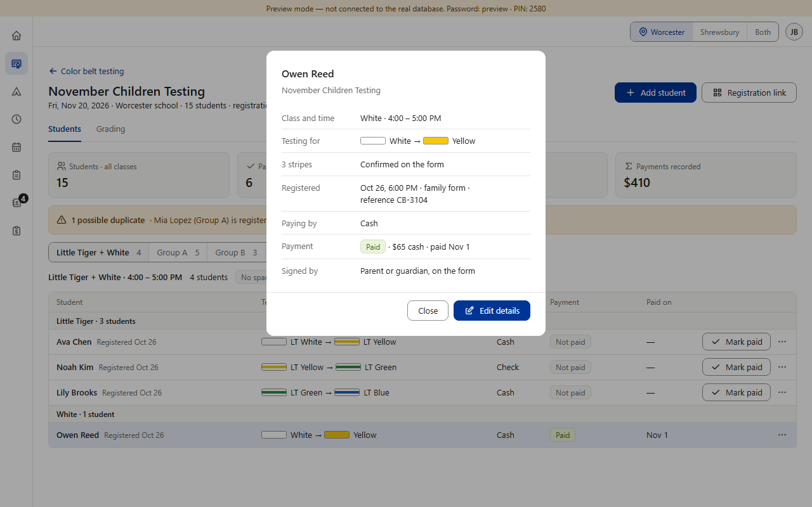
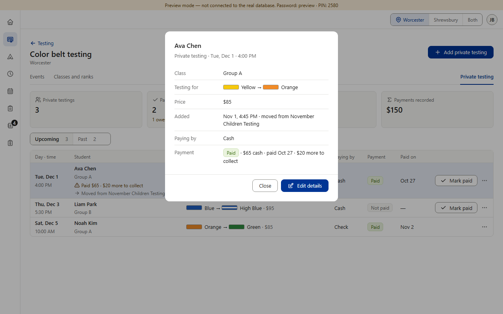
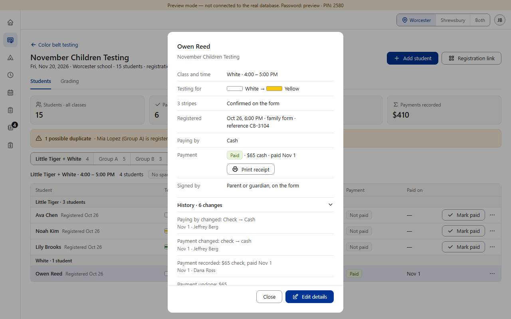
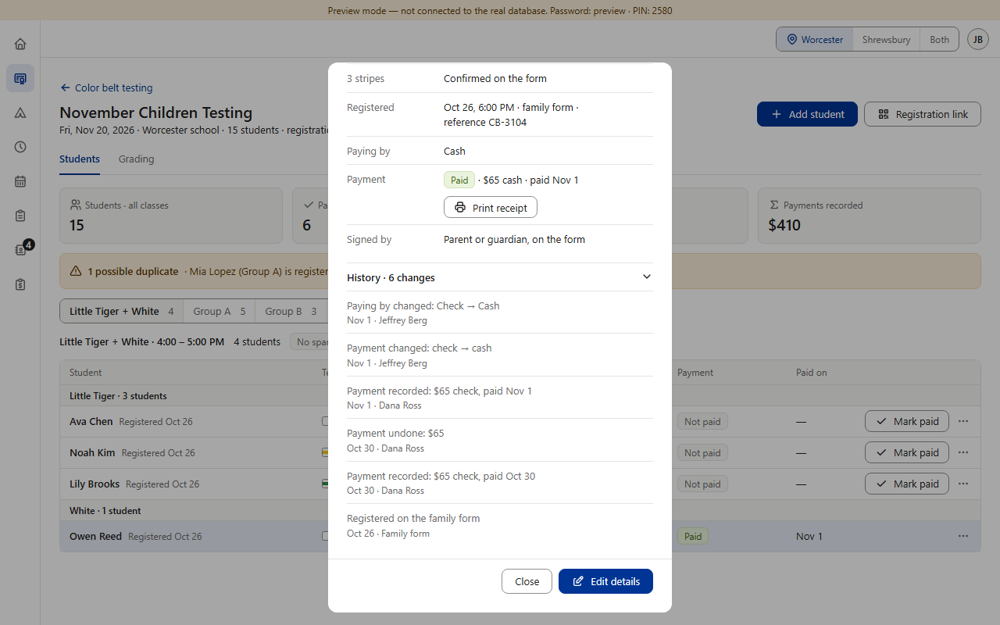
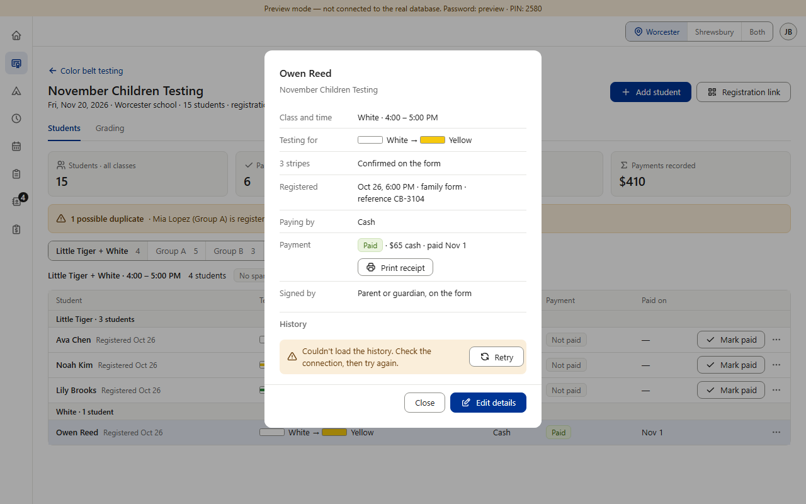
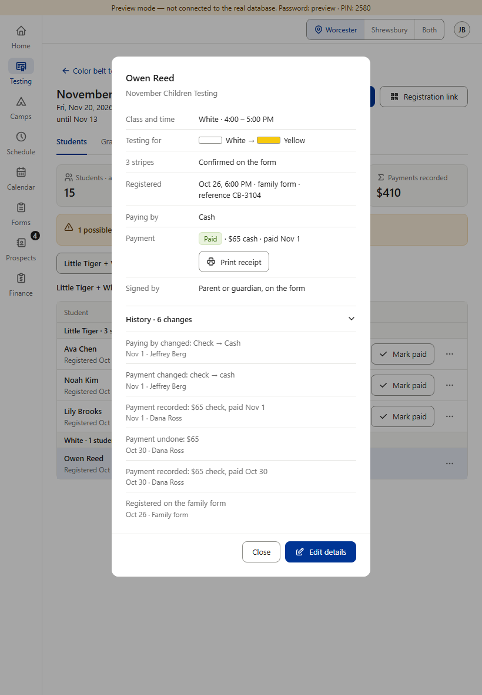
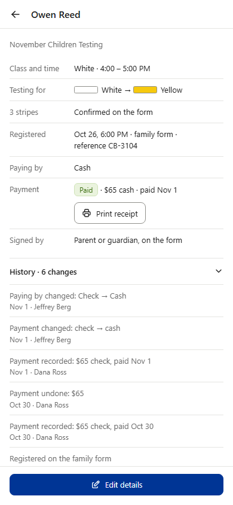
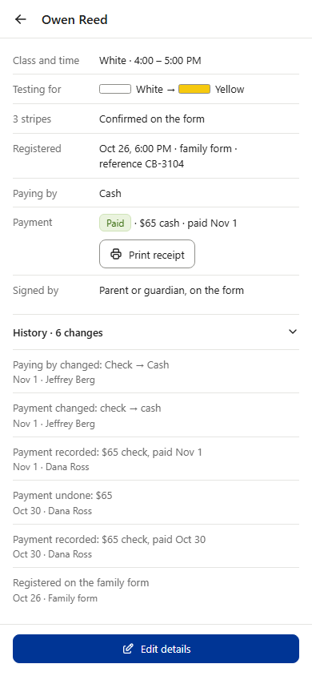
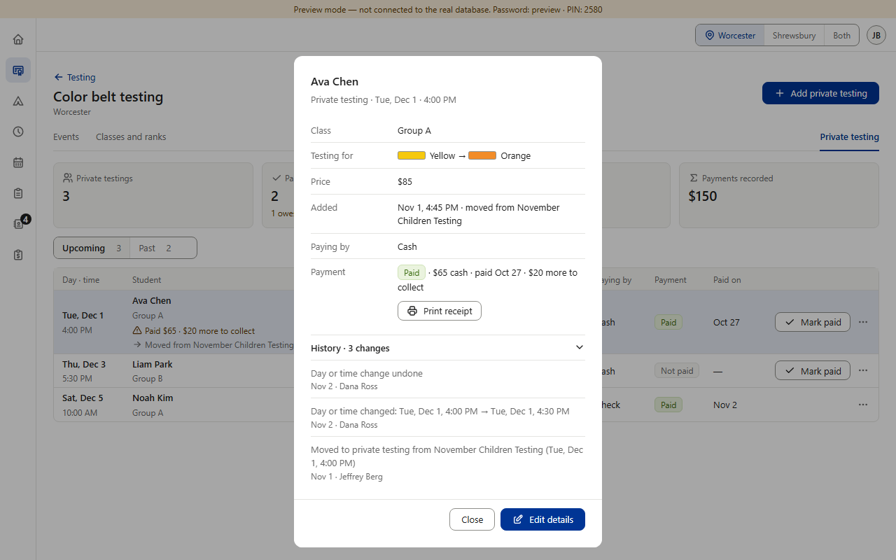
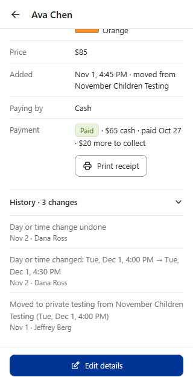
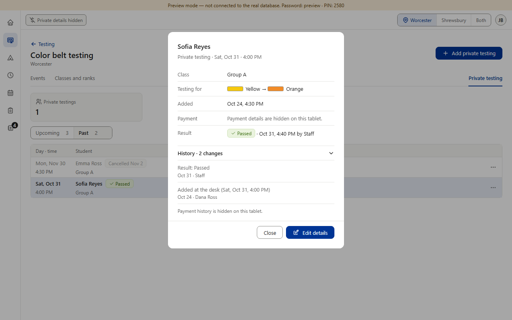
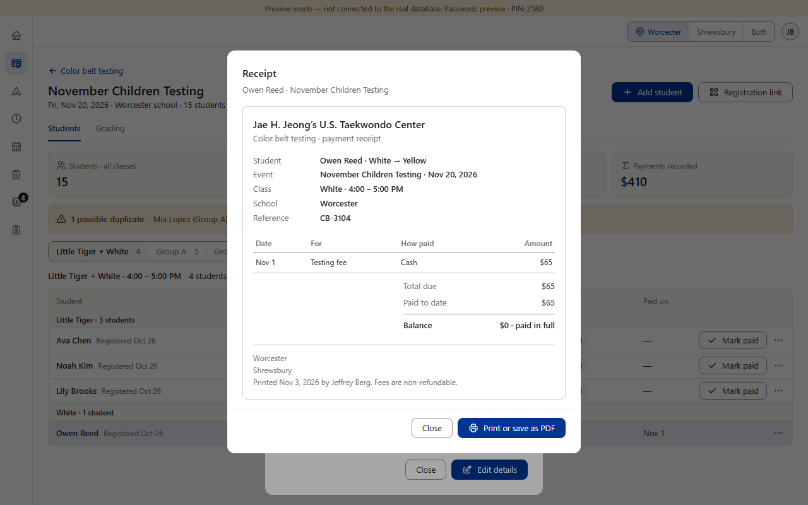
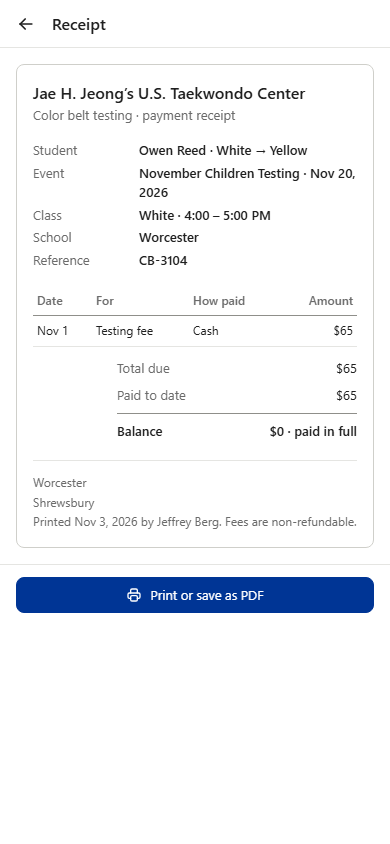
Ava Chen paid $65 cash on Oct 27 while she was on November Children Testing; on Nov 1 she was moved to a private testing (her payment moved with her) whose price is $85, and on Nov 3 she paid the $20 still owed. Already settled by copying Star and Camps (v0.518, v0.734): one line per payment that still stands, oldest first, each “Testing fee” (a payment doesn’t say what it paid for, so the receipt doesn’t guess), Total due = today’s price. Color Belt’s own question: the private testing is a new record, so its first payment is dated before the private testing existed — should the receipt say where it came from?
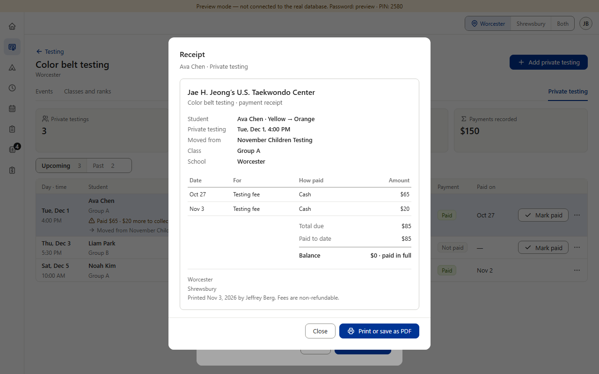
Recommended. Explains the Oct 27 payment, which is older than the private testing; the same words the row and the summary already show (“moved from November Children Testing”). Shows only for a private testing that was moved from an event; one added at the desk has no such line. Nothing new in the database: the private testing already stores the event’s name.
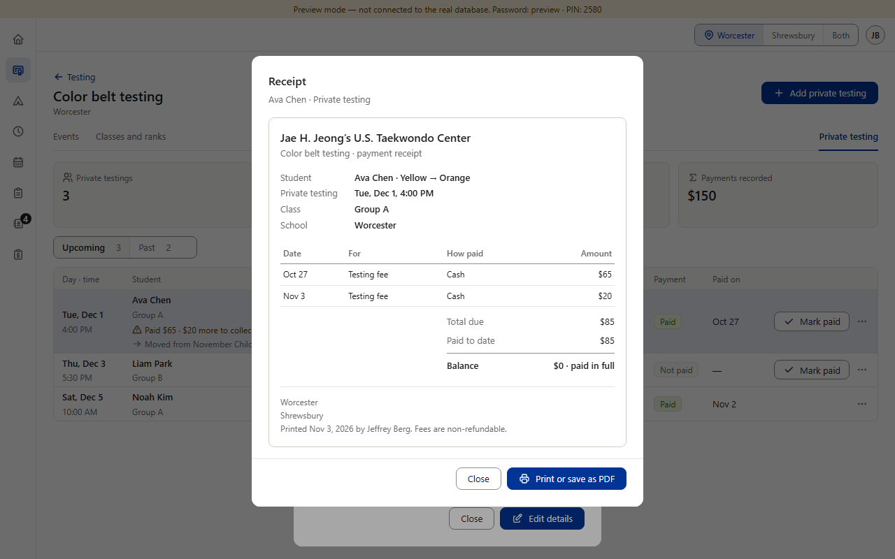
One line shorter and the same facts as any private testing. A family (or the school, months later) may ask why a payment is dated before the private testing was set up.
Everything else is copied from Star v0.518, Camps v0.734 and the shared parts. Answer A or B.